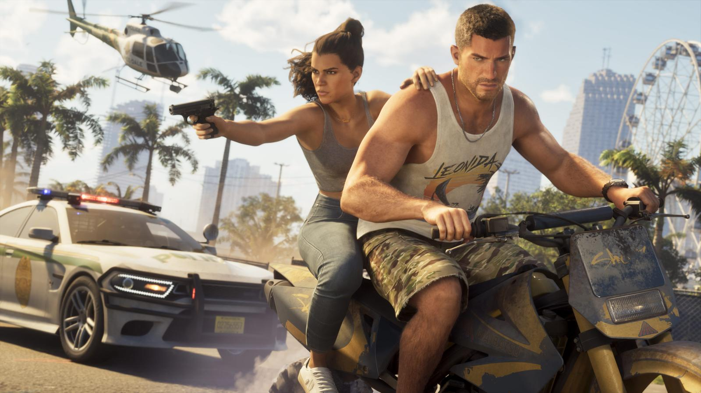

Дата выхода GTA 6: 19 ноября 2026
Опубликовано:

Коротко
- GTA 6 выходит 19 ноября 2026 (четверг).
- Платформы: PlayStation 5, PS5 Pro, Xbox Series X и Series S.
- PS4 и Xbox One — не поддерживаются, ПК — дата не объявлена.
- Предзагрузка — с 12 ноября 2026.
- Игру переносили дважды.
Когда выходит GTA 6
Rockstar Games официально назначила выход Grand Theft Auto VI на 19 ноября 2026 года. Это четверг. На старте игра выходит как сюжетная одиночная игра.
Платформы
- PlayStation 5 и PlayStation 5 Pro
- Xbox Series X и Xbox Series S
На PS4 и Xbox One игра не выйдет. Версию для ПК Rockstar пока не анонсировала — подробнее в статье GTA 6 на ПК: когда выйдет.

Предзагрузка
Предзагрузка для цифровых предзаказов откроется 12 ноября 2026 — за неделю до релиза. В тот же день в продаже появятся коробочные издания, чтобы их владельцы тоже успели скачать игру заранее. Цены и бонусы — в статье Издания и цены GTA 6: Standard и Ultimate.
История переносов
| Когда | Что произошло |
|---|---|
| Декабрь 2023 | Первый трейлер, заявлен выход в 2025 году |
| Май 2025 | Перенос на 26 мая 2026, вышел второй трейлер |
| Ноябрь 2025 | Перенос на 19 ноября 2026 |
Источники: Rockstar Games — официальный сайт GTA VI (rockstargames.com/VI), Rockstar Newswire, Rockstar Store.
Короткие ролики по GTA 6 — каждый день
Разборы кадров, слухи и факты за 30 секунд. Подписывайтесь:
YouTubeInstagramTikTokЧитайте также